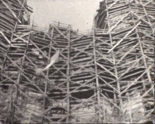
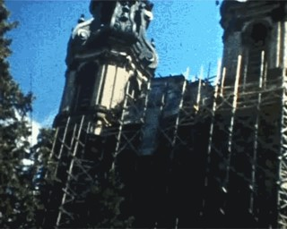
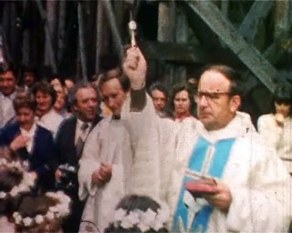
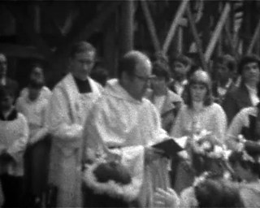

stare filmy z Krzeszowa
Amatorskie filmy 8 mm mają dziś chyba już tylko same wady: aby je obejrzeć należy rozkładać projektor, na ścianie powiesić ekran i oglądać je można dopiero po zaciemnieniu pomieszczenia. Oczywiście ma to swój urok, ale ponieważ projektor lata swojej świetności ma już dawno za sobą a po kleju do łączenia zerwanych odcinków pozostała już tylko pusta buteleczka - to są z tym jednak pewne problemy. Dlatego też pewnego dnia razem z bratem i moim tatą wpadliśmy na pomysł oddania starych filmów rodzinnych do studia specjalizującego się w ich przenoszeniu do formatu cyfrowego. A ponieważ na filmach tych można znaleźć fragmenty być może interesujące dla osób odwiedzających tę stronę, poniżej zamieszczam krótkie "wycinki" na których widać krzeszowski kościół - który kiedyś przez wiele lat otoczony był rusztowaniami. Przezentowane filmy zostały wykonane przez mojego tatę, Mieczysława Gabrowskiego.
|  | Fragment filmu prawdopodobnie z końca lat siedemdziesiątych. Widać na nim elewację kościoła opackiego szczelnie osłoniętą rusztowaniami. Rozmiar pliku 3,89 MB, rozdzielczość 640x512, czas trwania ~14 sekund, kompresja wideo DivX 6. |
|  | Fragment filmu który na podstawie innych jego fragmentów można datować na sierpień roku 1978 lub 1979. Tutaj również widać elewację w rusztowaniach - choć tym razem sięgają one o wiele niżej niż w pierwszym filmie. Rozmiar pliku 4,06 MB, rozdzielczość 640x512, czas trwania ~14 sekund, kompresja wideo DivX 6. |
|  | I Komunia św. w Krzeszowie, rok 1981, krzeszowscy cystersi: ówczesny proboszcz Baldwin Ziętara i wikary Augustyn Węgrzyn (późnieszy krzeszowski proboszcz, dziś proboszcz cysterskiego Sulejowa), widoczne rusztowania na elewacji kościoła. Rozmiar pliku 4,24 MB, rozdzielczość 640x512, czas trwania ~16 sekund, kompresja wideo DivX 6. |
|  | I Komunia św. w Krzeszowie rok później (a dokładnie 23-05-1982), cystersi ci sami i również w kadrze widoczne rusztowania na elewacji kościoła. Rozmiar pliku 8,33 MB, rozdzielczość 640x512, czas trwania ~33 sekundy, kompresja wideo DivX 6. |